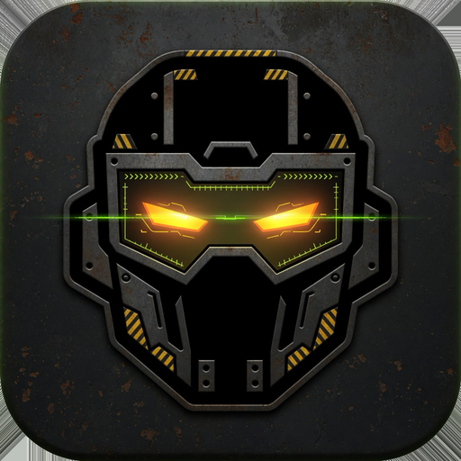

If nothing arrives, check iOS Settings → Notifications → Irk, and Focus. A feral nag asks you to type IRK WINS. There is no snooze at that attitude.
Open FIELD and start a sortie. Allow location while using the app. GPS stays on for that run if the screen locks. Cars and bikes are rejected. Stop the sortie when you are done.
Shuttle touches and jump squats use the camera to count reps. Nothing is recorded.
Wake the phone, touch and hold the Lock Screen, choose Customize, then Add Widgets, and search for Irk. The IRK Score widget shows your number. A late nag can also sit in a Live Activity.
A banner ad sits above the tabs and pays for the app. It hides during a nag, a workout, a drill, and a field run. Requests are non-personalized.
Irk is a training nag, not medical advice. Talk to a coach or clinician about injuries and training load.